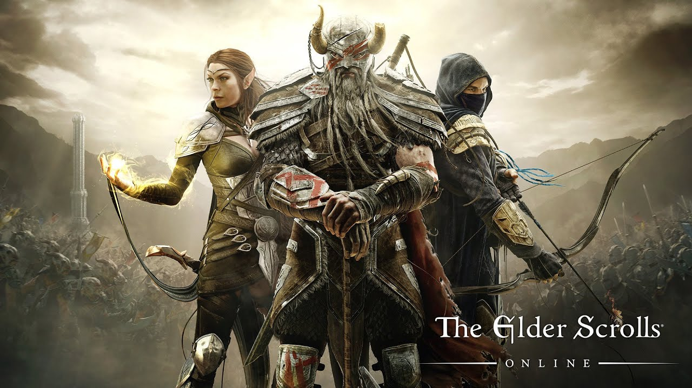

The Elder Scrolls Online
The Elder Scrolls Online – gra komputerowa z gatunku MMORPG stworzona przez ZeniMax Online Studios. Jej premiera odbyła się 4 kwietnia 2014.
Została wydana tak jak poprzednie części serii The Elder Scrolls, przez firmę Bethesda Softworks. 17 marca 2015 gra przeszła na nowy model biznesowy, w którym subskrypcja jest opcjonalna, obok możliwości zakupu gry jedorazowo.
Gracz steruje wcześniej utworzoną postacią poruszającą się po świecie Tamriel, który został stworzony na potrzebę gry/
Podczas rozgrywki postać może wykonywać zadania za które dostaje wynagrodzenie. Każda z postaci posiada zestaw umiejętności, które rozwijają się wraz z ich użyciem.